Site at a glance
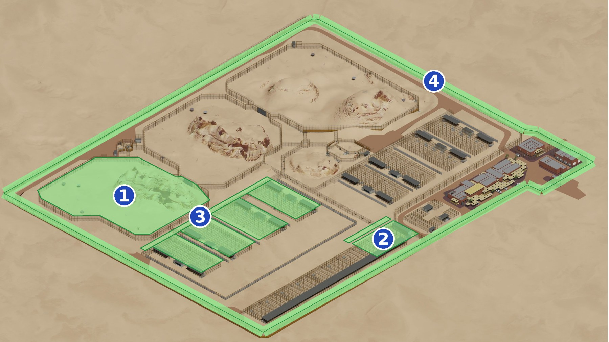
- 1Rewilding Enclosure (1 No.)417 m barrier fence, 3 gates; breeding enclosures listed in the same bill (800 m barrier, roofs, screens, 136 gates)
- 2Isolation Enclosure (2 Nos.)IE1 and IE2 only. 214 m barrier, 3 roof items, 32 gates and doors
- 3Corridor52 m low corridor, 157 m high corridor, 24 m screen, 3 gates
- 4Fencing, Railings and Walls1,438 m perimeter fence (5.5 m), 300 m compound fence (3 m), 7 gates
Rewilding Enclosure (1 No.)
BOQ Bill 2.2, Enclosures and Vestibules. Rewilding RE1 is the left-hand enclosure at the top of the site.
- 417 m5.5 m barrier fence
- 3 Nos.gates on the fence
- 3 mpost spacing
- 2 mshade net height
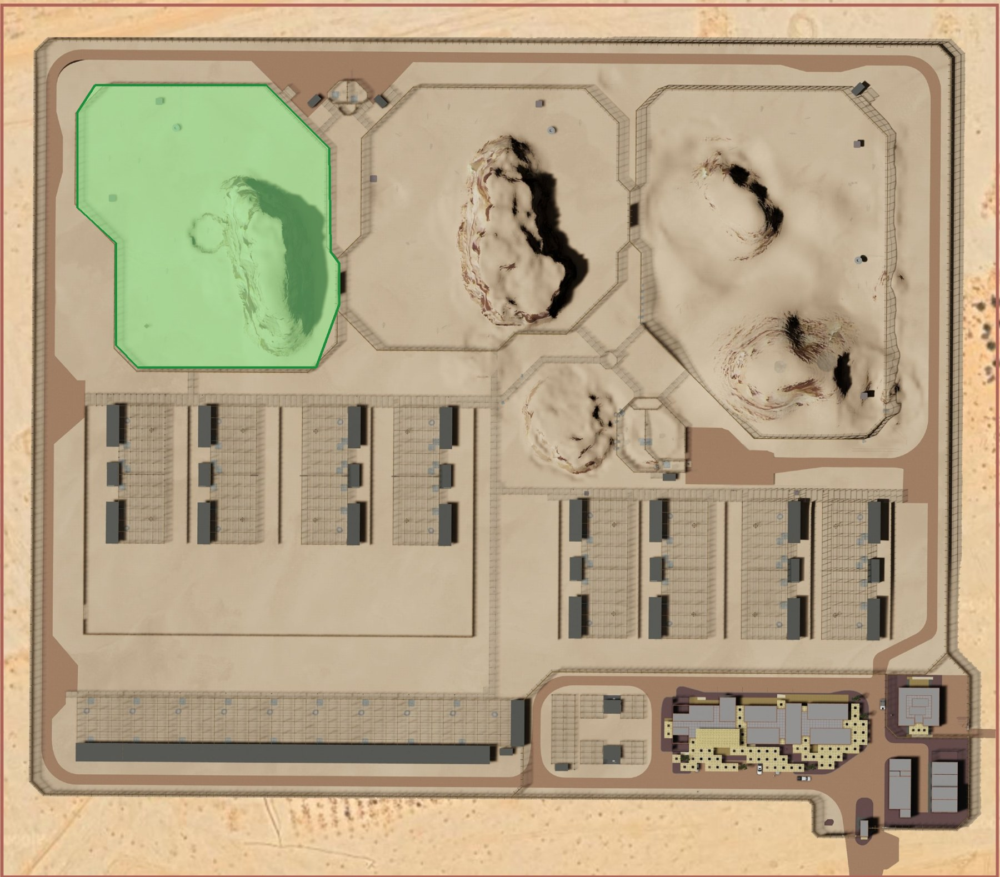
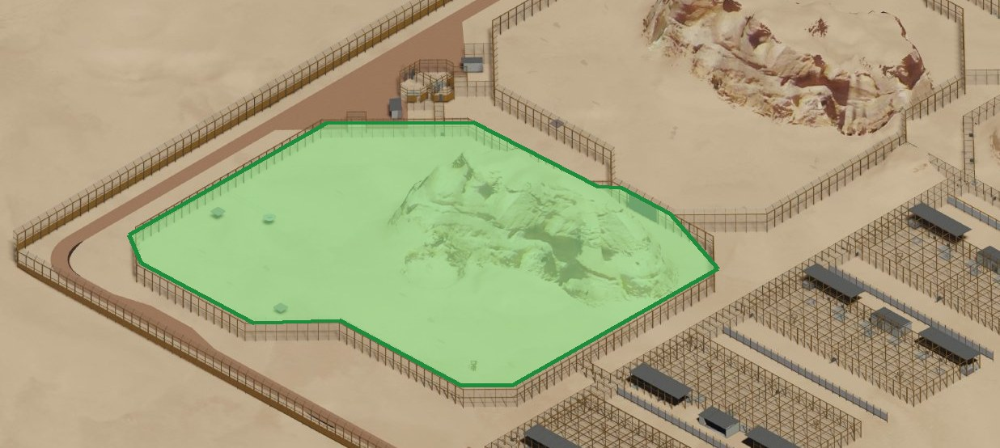
1.1 What the BOQ covers
| BOQ item | Description | Qty | Unit |
|---|---|---|---|
| A | Rewilding fence, barrier 5,500 mm high | 417 | m |
| C | Vehicle Gate Type B, 3,000 × 3,000 mm, manual | 2 | No |
| E | Transfer Type C, 10,000 × 5,500 mm, horizontal slider, remote with local manual override | 1 | No |
1.2 Specification and parts: rewilding fence (item A)
| Part | Specification | Source |
|---|---|---|
| Main post | Steel RHS 300 × 100 mm, 10 mm thick, 5.5 m above ground, every 3 m | BOQ item A; SE-001001 fence schedule |
| Outriggers | 1 m long, on both sides of the fence, facing the animal side | BOQ item A; AR-000039 note 15 |
| Beams | Top beam 60 × 60 × 5 mm; intermediate beam 70 × 70 × 5 mm | SE-001001 beam schedule |
| Shade net | 2 m high on the fence | BOQ item A |
| Base plate | 450 × 300 × 35 mm, 10 mm weld, 4 bolts of 30 mm, 50 mm edge distance, 300 mm embedment | BOQ item A; SE-001001 base plate schedule |
| Foundation | Pad 2,700 × 1,300 × 500 mm, B12 bars at 100 mm both ways, top and bottom | SE-001001 foundation schedule; BOQ External Works item A (ref. P1) |
| Maximum gap | 50 mm anywhere in an animal enclosure | AR-000039 note 12 |
1.3 Specification and parts: gates (items C and E)
| Gate | Qty | Opening | Operation | Frame and infill |
|---|---|---|---|---|
| Vehicle Gate Type B (VB) | 2 | 3,000 W × 3,000 H clear; panel 3,000 × 3,000 | Swing, manual | Welded tube, galvanised steel (or aluminium), painted; rigid welded mesh 50 × 50 mm. Ceiling panel must be removable at this gate. |
| Transfer Type C (TC) | 1 | 10,000 W × 5,500 H clear; two panels 5,060 × 5,560 each | Double horizontal slider, remote with local manual override | Welded tube, galvanised steel (or aluminium), painted; rigid welded mesh 50 × 50 mm. Leopard use. Motor inside animal space needs a removable metal box. Crate outer 1,400 × 900 × 1,000 mm. |
Gate types: AR-000039 Gate Type Schedule. Sliders overlap the clear opening by 60 mm at top and both sides (note 13). Track and accessories: galvanised, exterior-grade paint to match RCU standard.
1.4 Breeding enclosures listed in the same BOQ bill
The BOQ puts these items under the Rewilding heading. The bill summary names the section "Rewilding Enclosure & Breeding". The four breeding enclosures are shown below.
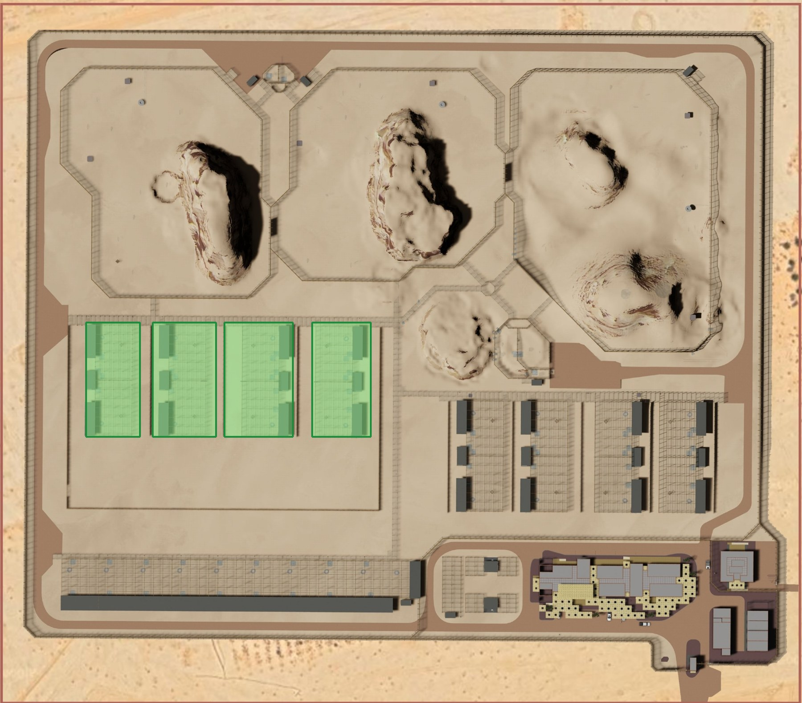
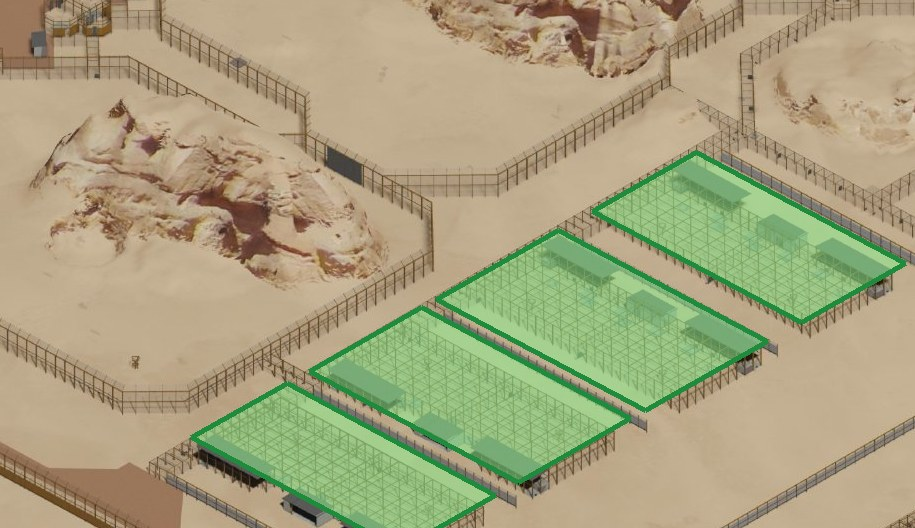
| BOQ item | Description | Qty | Unit |
|---|---|---|---|
| H | Breeding enclosure leopard barrier: mesh 4.88/3.76 mm, 25 × 25 mm, natural substrate, PVC chain-link ceiling, H = 5,000 mm, with supports and bracing | 800 | m |
| E | Shade netting to wall / enclosure | 5,200 | m² |
| F | Chain-link netting to roof enclosure | 4,840 | m² |
| G | Sloped composite metal roof | 1,240 | m² |
| J | Screen on non-barrier fence | 374 | m |
| K | Screening supplemented with native vegetation | 183 | m |
| L | Keeper Type A, 900 × 2,100 mm, manual | 48 | No |
| M | Keeper Type B, 900 × 2,100 mm, horizontal slider, manual | 8 | No |
| N | Transfer Type A, 700 × 400 mm, horizontal slider, remote with local manual override | 64 | No |
| P | Transfer Type E, 450 × 450 mm, horizontal slider, remote with local manual override | 16 | No |
The BOQ letter E appears twice in this bill (Transfer Type C and shade netting).
Structure of the breeding enclosures (SE-001010, Breeding and Auxiliary Enclosures)
| Part | Specification |
|---|---|
| Layout | 2.5 m grid. Mid level +3.500 m, roof level +5.000 m with metal deck roof. |
| Columns | SHS 150×150×5 (SHS150a), SHS 200×200×8 (SHS200e), SHS 200×200×6.3 (SHS200c) |
| Beams | RHS 200×100×5, RHS 150×100×5 and ×6.3, RHS 120×60×5, RHS 90×50×5, RHS 80×40×5, SHS 140×5 |
| Posts (enclosure schedule) | 5 m above ground; peripheral posts at 2.5 m maximum, internal posts at 5 m |
| Footings | Pad types PF6 (2,100×1,400×500), PF7 (1,200×1,200×400), PF9 (1,900×1,000×400), PF11 (1,600×1,200×500) |
| Floor and walls | RC slab 200 mm and 300 mm; CMU walls 150 mm and 200 mm |
Gate types used in the breeding enclosures (AR-000039)
| Type | Operation | Clear opening | Panel | Mesh |
|---|---|---|---|---|
| Keeper A (KA) | Swing, manual | 900 × 2,100 | 900 × 2,100 | 25 × 25 mm |
| Keeper B (KB) | Horizontal slider, manual | 900 × 2,100 | 1,020 × 2,160 | 25 × 25 mm |
| Transfer A (TA) | Horizontal slider, remote with local manual override | 950 × 1,050 | 1,010 × 1,110 | 25 × 25 mm |
| Transfer E (TE) | Horizontal slider, remote with local manual override | 450 × 450 | 570 × 450 | 25 × 25 mm |
Points to confirm for this area
- Transfer Type A is 700 × 400 mm in the BOQ but 950 × 1,050 mm clear opening in the gate schedule AR-000039.
- The roof, netting and breeding items sit under the Rewilding heading in the BOQ. The drawings show the metal deck roof on the breeding, auxiliary and isolation enclosures, not on RE1.
- Column and beam counts for the breeding steel could not be checked from the drawing text.
Isolation Enclosure (2 Nos.)
BOQ Bill 2.2. IE1 and IE2 only; IE3 to IE9 are omitted as the BOQ heading states.
- 214 m5 m high barrier
- 2,388 m²roof and netting items
- 30 Nos.gates
- 2 Nos.doors D1
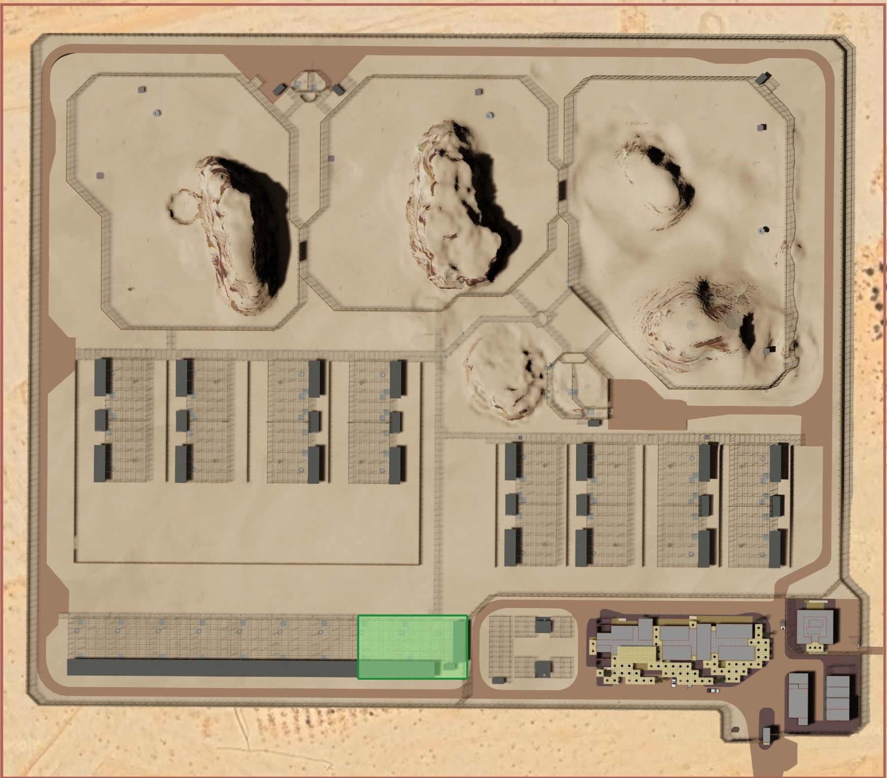
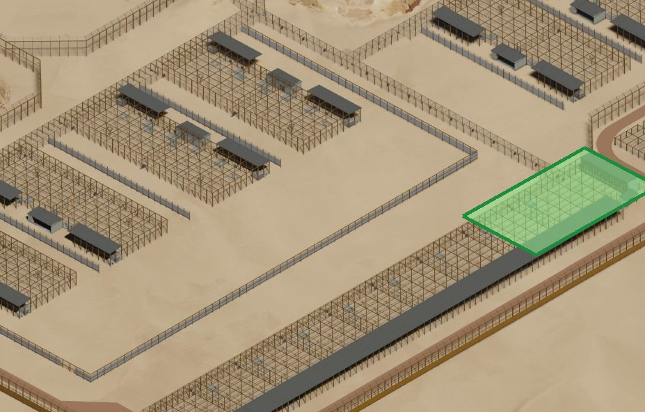
2.1 What the BOQ covers
| BOQ item | Description | Qty | Unit |
|---|---|---|---|
| K | Isolation Enclosure barrier: mesh 4.88/3.76 mm, 25 × 25 mm, natural substrate, PVC chain-link ceiling, H = 5,000 mm, with supports and bracing | 214 | m |
| G | Shade netting to wall / enclosure | 906 | m² |
| H | Chain-link netting to roof enclosure | 1,012 | m² |
| J | Typical sloped standing roof | 470 | m² |
| J (2nd) | Keeper Type A, 900 × 2,100 mm, manual | 12 | No |
| L | Transfer Type A, 700 × 400 mm, horizontal slider, remote with local manual override | 6 | No |
| M | Transfer Type B, 1,010 × 1,110 mm, horizontal slider, remote with local manual override | 12 | No |
| Q | Observation screen, 16.85 × 2.4 m | 1 | No |
| R | Door D1, 900 × 2,400 mm, manual | 2 | No |
The BOQ letter J is used twice in this bill.
2.2 Specification and parts: isolation barrier (item K)
| Part | Specification | Source |
|---|---|---|
| Height and mesh | 5,000 mm high; mesh 25 × 25 mm, 4.88/3.76 mm wire; natural substrate; PVC extruded chain-link ceiling; supports and bracing included | BOQ item K |
| Layout | Three bay types (1, 2, 3) on a 2.5 m grid; bay drawn about 30 m long and 17.5 m wide. Mid level +3.500 m, roof level +5.000 m with metal deck roof. | SE-001040, 001041, 001042 |
| Columns | SHS 150×150×5 (SHS150a), SHS 200×200×8 (SHS200e), SHS 200×200×10 (SHS200g), SHS 200×200×6.3 (SHS200c); RHS 160×80×5 (RHS160b) along the corridor edge | SE-001040, 001041 |
| Beams | RHS 150×100×5, RHS 200×100×5, SHS 140×5, RHS 90×50×5, RHS 80×40×5 | SE-001040, 001041 |
| Posts (enclosure schedule) | 5 m above ground; periphery at 2.5 m maximum spacing, internal posts at 5 m | SE-001010 |
| Footings | Pad types PF6, PF7, PF11, PF15 (1,200×1,200×500), PF16 (1,400×1,400×400) | SE-001040, 001041 |
| Floor and walls | RC slab 300 mm at ground level, 200 mm RC slab at +0.250 m; CMU wall 150 mm | SE-001040, 001041 |
2.3 Specification and parts: gates, door, screen
| Item | Qty | Opening | Operation | Frame and infill |
|---|---|---|---|---|
| Keeper Type A (KA) | 12 | 900 × 2,100 | Swing, manual | Welded tube, galvanised or aluminium, painted; mesh 25 × 25 mm |
| Transfer Type A (TA) | 6 | BOQ 700 × 400; schedule 950 × 1,050 (panel 1,010 × 1,110) | Horizontal slider, remote with local manual override | Welded tube, painted; mesh 25 × 25 mm; leopard |
| Transfer Type B (TB) | 12 | BOQ 1,010 × 1,110; schedule clear 950 × 1,050 | Horizontal slider, remote with local manual override | Welded tube, painted; mesh 50 × 50 mm; leopard |
| Door D1 | 2 | 900 × 2,400 (observation area) | Manual | Frame F, galvanised hollow metal, painted; rigid welded mesh 25 × 25 mm |
| Observation screen | 1 | 16.85 × 2.4 m | - | No further detail in the BOQ |
Gate and door types: AR-000039 (Gate Type Schedule and Door Frame Types).
Points to confirm for this area
- The bill summary row still reads "Isolation Enclosure (9 Nos.)" while the section heading says 2 Nos.
- Transfer Type A size differs between the BOQ and the gate schedule (see area 1).
- Keeper A (12) and Transfer A (6) carry the same BOQ amounts as the breeding quantities of 48 and 64. The estimator should confirm the quantities used.
- Observation screen: confirm the drawing reference.
- The 2,388 m² figure is shade net 906 + chain-link 1,012 + roof 470, added from the BOQ.
Corridor
BOQ Bill 2.3, Animal Circulation. Flex corridors that link the enclosures.
- 52 mflex corridor, 2.5 m frame
- 157 mflex corridor, 5 m frame
- 24 mscreening
- 3 Nos.gates
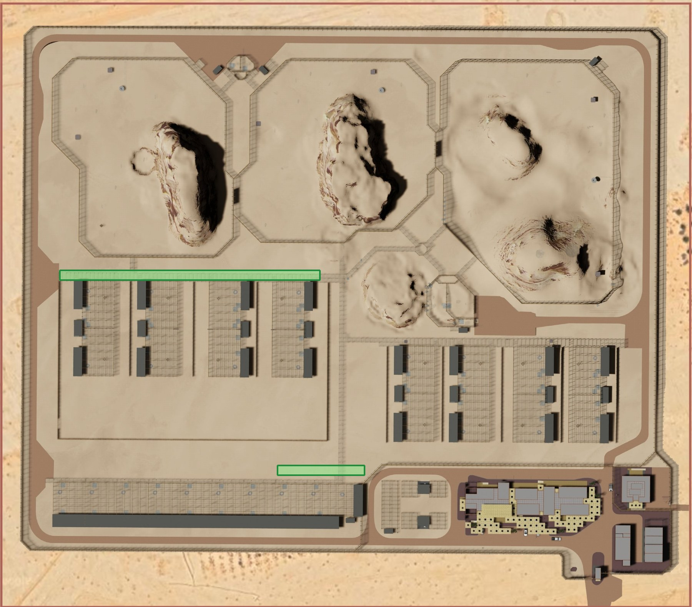
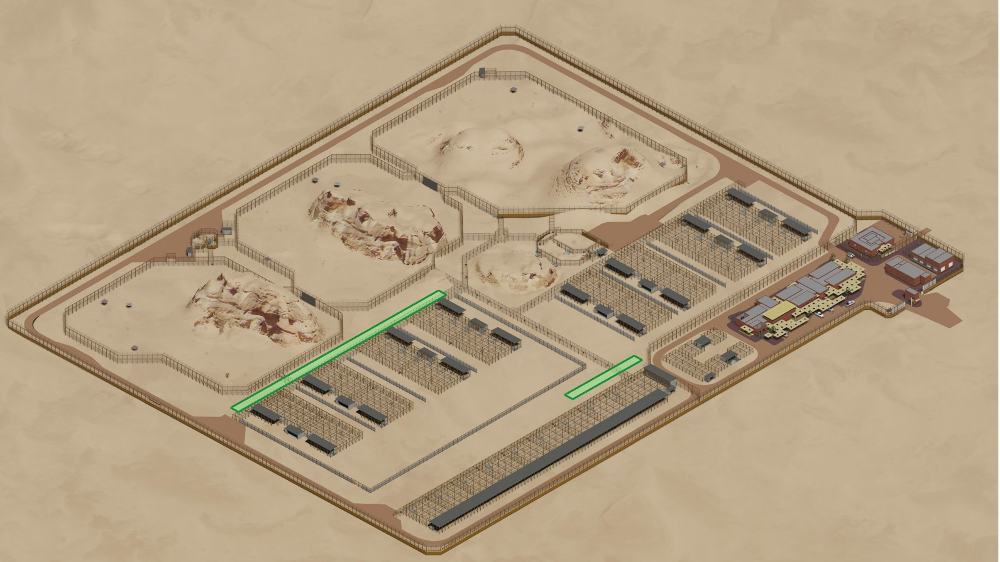
3.1 What the BOQ covers
| BOQ item | Description | Qty | Unit |
|---|---|---|---|
| A | Flex corridor, 2.5 m frame | 52 | m |
| B | Flex corridor, 5 m frame | 157 | m |
| C | Screening including substructure and ceiling enclosure | 24 | m |
| D | Keeper Type A, 900 × 2,100 mm, manual | 1 | No |
| E | Vehicular Type A, 6,000 × 5,500 mm, manual | 1 | No |
| F | Vehicle Gate Type B, 3,000 × 3,000 mm, manual | 1 | No |
3.2 Specification and parts: flex corridors
| Part | Item A: 52 m | Item B: 157 m |
|---|---|---|
| Post | 160 × 80 mm, 5 mm thick (RHS160b) | 200 × 100 mm, 6.3 mm thick (RHS200d) |
| Height above ground | 3 m | 3.8 m (BOQ) |
| Outrigger | None | None |
| Post spacing | 2.5 m centres | 2.5 m centres |
| Shade net | 2 m | 2 m |
| Base plate | 300 × 225 × 30 mm, 6 mm weld, 4 bolts of 24 mm, 40 mm edge distance, 250 mm embedment | |
| Beam | RHS 80 × 40 × 5 mm (RHS80f) between posts | |
Sources: BOQ Bill 2.3 items A and B; SE-001001 fence and base plate schedules; SE-001010 and SE-001040 column and beam schedules.
3.3 Gates in the corridor (AR-000039)
| Gate | Qty | Opening | Operation | Frame and infill |
|---|---|---|---|---|
| Keeper Type A | 1 | 900 × 2,100 | Swing, manual | Welded tube, painted; mesh 25 × 25 mm |
| Vehicular Type A (VA) | 1 | 6,000 W × 5,500 H; two leaves of 3,000 × 5,500 | Double swing, manual | Welded tube, painted; mesh 25 × 25 mm |
| Vehicle Gate Type B (VB) | 1 | 3,000 × 3,000 | Swing, manual | Welded tube, painted; mesh 50 × 50 mm |
Points to confirm for this area
- Height of the 5 m frame corridor: 3.8 m in the BOQ, 3.0 m in the SE-001001 legend (the 3.8 m line there is listed with the prey enclosure).
- The 24 m screening (item C) has no further specification in the BOQ.
- Corridor positions are read from the renders and are indicative.
Fencing, Railings and Walls
BOQ Bill 2.4, External Works. Electrified perimeter fence and site gates.
- 1,438 mperimeter fence, 5.5 m
- 300 mcompound fence, 3 m
- 7 Nos.site gates
- 579 Nos.foundations (see below)
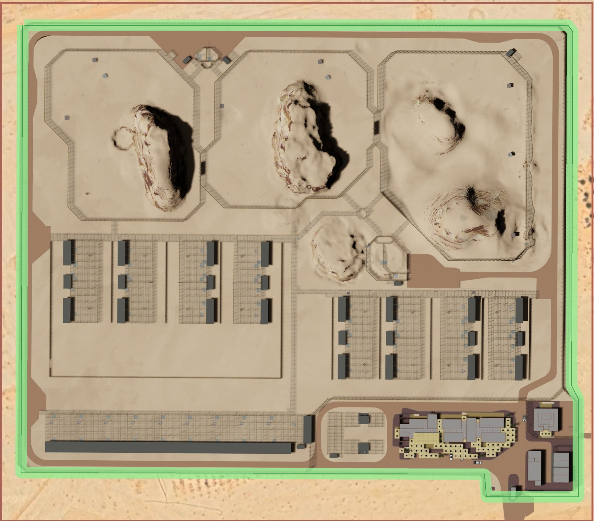
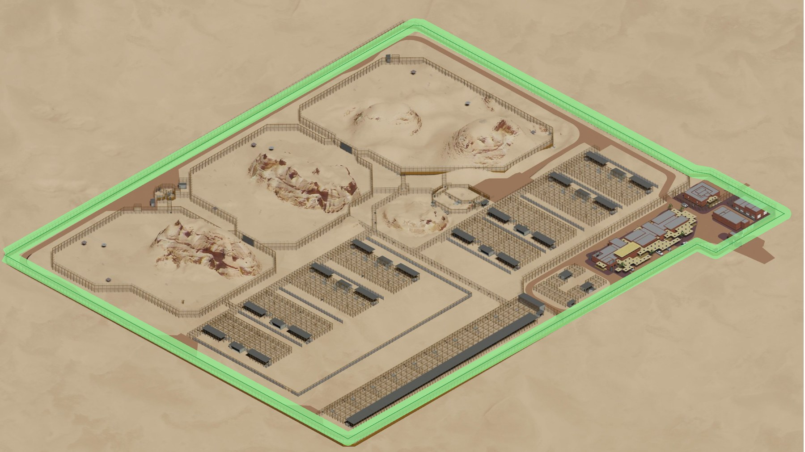
4.1 What the BOQ covers
| BOQ item | Description | Qty | Unit |
|---|---|---|---|
| A | RCC foundation 2,700 × 1,300 × 500 mm incl. excavation, waterproofing, blinding, concrete, reinforcement, formwork (ref. P1). Marked "out of scope" in this BOQ. | 579 | No |
| B | 5,500 mm high (overall) fence, 300 × 100 mm main post, 2 m shade net height, base, bolts and connections (ref. P1) | 1,438 | m |
| C | 3,000 mm high fence (external elevation, compound), 300 × 100 mm main post, 2 m shade net height, base, bolts and connections | 300 | m |
| D | Vehicular Type E, 7,200 × 5,500 mm, remote with local manual override | 3 | No |
| E | Vehicular Type A, 6,000 × 5,500 mm, manual | 2 | No |
| F | Keeper Type A, 900 × 2,100 mm overall, manual | 2 | No |
The fence is described as electrified: it includes the connection to electrical services, fixed in position, with foundation as described.
4.2 Specification and parts: perimeter fence
| Part | Specification | Source |
|---|---|---|
| Main post | RHS 300 × 100 mm, 10 mm thick, 5.5 m above ground, every 3 m | SE-001001 (type P1); BOQ item B |
| Outriggers | 1 m on both sides | SE-001001 |
| Shade net | 2 m high | BOQ items B and C; SE-001001 |
| Base plate | 450 × 300 × 35 mm, 10 mm weld, 4 bolts of 30 mm, 50 mm edge distance, 300 mm embedment | SE-001001 base plate schedule |
| Foundation | Pad 2,700 × 1,300 × 500 mm, B12 at 100 mm both ways, top and bottom | SE-001001; BOQ item A |
| Compound fence (3 m) | 300 × 100 mm main post; the SE-001001 legend lists 3 m fence types with no outriggers, 3 m spacing and 2 m shade net | BOQ item C; SE-001001 |
| Setting out | Posts evenly spaced, 3.0 m maximum, consistent along the whole fence line | SE-001001 fence post note |
4.3 Gates on the perimeter (AR-000039)
| Gate | Qty | Opening | Operation | Frame and infill |
|---|---|---|---|---|
| Vehicular Type E (VE), site egress | 3 | BOQ 7,200 × 5,500; schedule: road width × 5,500 | Horizontal slider, remote with local manual override | Welded tube, painted; mesh 25 × 25 mm |
| Vehicular Type A (VA) | 2 | 6,000 W × 5,500 H; two leaves of 3,000 × 5,500 | Double swing, manual | Welded tube, painted; mesh 25 × 25 mm |
| Keeper Type A (KA) | 2 | 900 × 2,100 | Swing, manual | Welded tube, painted; mesh 25 × 25 mm |
Points to confirm for this area
- Which part of the line is the 300 m compound fence. The render shows a stepped corner at the entrance; the exact run should be marked by the design team.
- The 579 foundations are outside this BOQ package. The footing quantities are in the Footing QTY R02 sheet.
- Fence line is traced from the renders and is indicative, not a scaled survey.
Summary of points to confirm
| # | Point | Area | Who to ask |
|---|---|---|---|
| 1 | Transfer Type A size: 700 × 400 mm (BOQ) vs 950 × 1,050 mm (gate schedule) | 1, 2 | Design Consultant |
| 2 | Corridor 5 m frame height: 3.8 m (BOQ) vs 3.0 m (SE-001001 legend) | 3 | Design Consultant |
| 3 | Isolation summary row says 9 Nos.; the section is 2 Nos. | 2 | Quantity Surveyor |
| 4 | Keeper A (12) and Transfer A (6) in Isolation carry the amounts of 48 and 64 gates | 2 | Estimator |
| 5 | Roofs, netting and breeding items sit under the Rewilding heading | 1 | Quantity Surveyor |
| 6 | Location of the 300 m, 3 m compound fence | 4 | Design Consultant |
| 7 | Observation screen and 24 m corridor screening: no detail in the BOQ | 2, 3 | Design Consultant |
| 8 | Duplicate item letters (E in Rewilding, J in Isolation) | 1, 2 | Quantity Surveyor |
| 9 | ARCH-Fence Specification and the PTR could not be read; column and beam counts not verified | All | Design Consultant |
Sources: B.O.Q for Fence and Gates Package Rev.01 (09.08.2026), Bills 2.2, 2.3 and 2.4; site renders (Render 1 plan, Render 2 isometric, Render 3 used for area names); drawings MP3SNCULC6018-ACM-XX-AA-000-DR-SE-001001, SE-001010, SE-001040, SE-001041 and MP3SNCULC6018-ASG-XX-AA-000-DR-AR-000039. Highlighted areas are traced on the renders for this report and are indicative.